38. The Acceleration Principle and the Nature of Business Cycles#
38.1. Overview#
This lecture studies two classic papers by Gregory Chow:
Chow [1968] presents empirical evidence for the acceleration principle, describes how acceleration promotes oscillations, and analyzes conditions for the emergence of spectral peaks in linear difference equation subjected to random shocks
Chow and Levitan [1969] presents a spectral analysis of a calibrated US macroeconometric model and teaches about spectral gains, coherences, and lead–lag patterns
These papers are related to ideas in the following lectures:
The multiplier–accelerator mechanism in Samuelson Multiplier-Accelerator
Linear stochastic difference equations and autocovariances in Linear State Space Models
Eigenmodes of multivariate dynamics in VARs and DMDs
Fourier ideas in Circulant Matrices (and, for empirical estimation, the advanced lecture Estimation of Spectra)
Chow [1968] builds on earlier empirical work testing the acceleration principle on US investment data.
We start with that empirical evidence before developing the theoretical framework.
We will keep returning to three ideas:
In deterministic models, oscillations indicate complex eigenvalues of a transition matrix.
In stochastic models, a “cycle” shows up as a local peak in a (univariate) spectral density.
Spectral peaks depend on eigenvalues, but also on how shocks enter and on how observables load on eigenmodes.
Let’s start with some standard imports:
import numpy as np
import matplotlib.pyplot as plt
We will use the following helper functions throughout the lecture
def spectral_density_var1(A, V, ω_grid):
"""Spectral density matrix for VAR(1): y_t = A y_{t-1} + u_t."""
A, V = np.asarray(A), np.asarray(V)
n = A.shape[0]
I = np.eye(n)
F = np.empty((len(ω_grid), n, n), dtype=complex)
for k, ω in enumerate(ω_grid):
H = np.linalg.inv(I - np.exp(-1j * ω) * A)
F[k] = (H @ V @ H.conj().T) / (2 * np.pi)
return F
def spectrum_of_linear_combination(F, b):
"""Spectrum of x_t = b'y_t given the spectral matrix F(ω)."""
b = np.asarray(b).reshape(-1, 1)
return np.array([np.real((b.T @ F[k] @ b).item())
for k in range(F.shape[0])])
def simulate_var1(A, V, T, burn=200, seed=1234):
r"""Simulate y_t = A y_{t-1} + u_t with u_t \sim N(0, V)."""
rng = np.random.default_rng(seed)
A, V = np.asarray(A), np.asarray(V)
n = A.shape[0]
chol = np.linalg.cholesky(V)
y = np.zeros((T + burn, n))
for t in range(1, T + burn):
y[t] = A @ y[t - 1] + chol @ rng.standard_normal(n)
return y[burn:]
def sample_autocorrelation(x, max_lag):
"""Sample autocorrelation of a 1d array from lag 0 to max_lag."""
x = np.asarray(x)
x = x - x.mean()
denom = np.dot(x, x)
acf = np.empty(max_lag + 1)
for k in range(max_lag + 1):
acf[k] = np.dot(x[:-k] if k else x, x[k:]) / denom
return acf
38.2. Empirical foundation for the acceleration principle#
Chow [1968] opens by reviewing empirical evidence for the acceleration principle from earlier macroeconometric work.
Using annual observations for 1931–40 and 1948–63, Chow tested the acceleration equation on three investment categories:
new construction
gross private domestic investment in producers’ durable equipment combined with change in business inventories
the last two variables separately
In each case, when the regression included both \(Y_t\) and \(Y_{t-1}\) (where \(Y\) is gross national product minus taxes net of transfers), the coefficient on \(Y_{t-1}\) was of opposite sign and slightly smaller in absolute value than the coefficient on \(Y_t\).
Equivalently, when expressed in terms of \(\Delta Y_t\) and \(Y_{t-1}\), the coefficient on \(Y_{t-1}\) was a small fraction of the coefficient on \(\Delta Y_t\).
38.2.1. An example: automobile demand#
Chow presents a clean illustration using data on net investment in automobiles from his earlier work on automobile demand.
Using annual data for 1922–41 and 1948–57, he estimates by least squares:
where:
\(Y_t\) is real disposable personal income per capita
\(p_t\) is a relative price index for automobiles
\(y_t^n\) is per capita net investment in passenger automobiles
standard errors appear in parentheses
The key observation: the coefficients on \(Y_{t-1}\) and \(p_{t-1}\) are the negatives of the coefficients on \(Y_t\) and \(p_t\).
This pattern is exactly what the acceleration principle predicts.
38.2.2. From stock adjustment to acceleration#
The empirical support for acceleration should not be surprising once we accept a stock-adjustment demand equation for capital:
where \(s_{it}\) is the stock of capital good \(i\).
The acceleration equation (38.1) is essentially the first difference of (38.2).
Net investment is the change in stock, \(y_{it}^n = \Delta s_{it}\), and differencing (38.2) gives:
The coefficients on \(Y_t\) and \(Y_{t-1}\) in the level form are \(a_i\) and \(-a_i(1-b_i)\) respectively.
They are opposite in sign and similar in magnitude when \(b_i\) is not too far from unity.
This connection between stock adjustment and acceleration is central to Chow’s argument about why acceleration matters for business cycles.
38.3. Acceleration enables oscillations#
Having established the empirical evidence for acceleration, we now examine why it matters theoretically for generating oscillations.
Chow [1968] asks a fundamental question: if we build a macro model using only standard demand equations with simple distributed lags, can the system generate sustained oscillations?
He shows that, under natural sign restrictions, the answer is no.
Stock-adjustment demand for durable goods leads to investment equations where the coefficient on \(Y_{t-1}\) is negative.
This negative coefficient captures the acceleration effect: investment responds not just to the level of income, but to its rate of change.
This negative coefficient is also what makes complex roots possible in the characteristic equation.
Without it, Chow proves that demand systems with only positive coefficients have real positive roots, and hence no oscillatory dynamics.
The Samuelson Multiplier-Accelerator lecture explores this mechanism in detail through the Hansen-Samuelson multiplier-accelerator model.
Here we briefly illustrate the effect.
Take the multiplier–accelerator law of motion:
and rewrite it as a first-order system in \((Y_t, Y_{t-1})\).
def samuelson_transition(c, v):
return np.array([[c + v, -v], [1.0, 0.0]])
# Compare weak vs strong acceleration
# Weak: c=0.8, v=0.1 gives real roots (discriminant > 0)
# Strong: c=0.6, v=0.8 gives complex roots (discriminant < 0)
cases = [("weak acceleration", 0.8, 0.1),
("strong acceleration", 0.6, 0.8)]
A_list = [samuelson_transition(c, v) for _, c, v in cases]
for (label, c, v), A in zip(cases, A_list):
eig = np.linalg.eigvals(A)
disc = (c + v)**2 - 4*v
print(
f"{label}: c={c}, v={v}, discriminant={disc:.2f}, eigenvalues={eig}")
weak acceleration: c=0.8, v=0.1, discriminant=0.41, eigenvalues=[0.77015621 0.12984379]
strong acceleration: c=0.6, v=0.8, discriminant=-1.24, eigenvalues=[0.7+0.55677644j 0.7-0.55677644j]
With weak acceleration (\(v=0.1\)), the discriminant is positive and the roots are real.
With strong acceleration (\(v=0.8\)), the discriminant is negative and the roots are complex conjugates that enable oscillatory dynamics.
Now let’s see how these different eigenvalue structures affect the impulse responses to a one-time shock in \(Y\)
T = 40
s0 = np.array([1.0, 0.0])
irfs = []
for A in A_list:
s = s0.copy()
path = np.empty(T + 1)
for t in range(T + 1):
path[t] = s[0]
s = A @ s
irfs.append(path)
fig, ax = plt.subplots(figsize=(10, 4))
ax.plot(range(T + 1), irfs[0], lw=2,
label="weak acceleration (real roots)")
ax.plot(range(T + 1), irfs[1], lw=2,
label="strong acceleration (complex roots)")
ax.axhline(0.0, lw=0.8, color='gray')
ax.set_xlabel("time")
ax.set_ylabel(r"$Y_t$")
ax.legend(frameon=False)
plt.tight_layout()
plt.show()
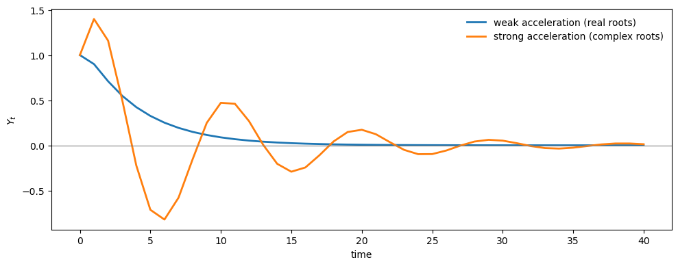
With weak acceleration, the impulse response decays monotonically.
With strong acceleration, it oscillates.
We can ask how the eigenvalues change as we increase the accelerator \(v\).
As we increase the accelerator \(v\), the eigenvalues move further from the origin.
For this model, the eigenvalue modulus is \(|\lambda| = \sqrt{v}\), so the stability boundary is \(v = 1\).
v_grid = [0.2, 0.4, 0.6, 0.8, 0.95]
c = 0.6
T_irf = 40 # periods for impulse response
fig, axes = plt.subplots(1, 2, figsize=(12, 5))
for v in v_grid:
A = samuelson_transition(c, v)
eig = np.linalg.eigvals(A)
# Eigenvalues (left panel)
axes[0].scatter(eig.real, eig.imag, s=40, label=f'$v={v}$')
# Impulse response (right panel)
s = np.array([1.0, 0.0])
irf = np.empty(T_irf + 1)
for t in range(T_irf + 1):
irf[t] = s[0]
s = A @ s
axes[1].plot(range(T_irf + 1), irf, lw=2, label=f'$v={v}$')
# Visualize the eigenvalue locations and the unit circle
θ_circle = np.linspace(0, 2*np.pi, 100)
axes[0].plot(np.cos(θ_circle), np.sin(θ_circle),
'k--', lw=0.8, label='unit circle')
axes[0].set_xlabel('real part')
axes[0].set_ylabel('imaginary part')
axes[0].set_aspect('equal')
axes[0].legend(frameon=False)
# impulse response panel
axes[1].axhline(0, lw=0.8, color='gray')
axes[1].set_xlabel('time')
axes[1].set_ylabel(r'$Y_t$')
axes[1].legend(frameon=False)
plt.tight_layout()
plt.show()
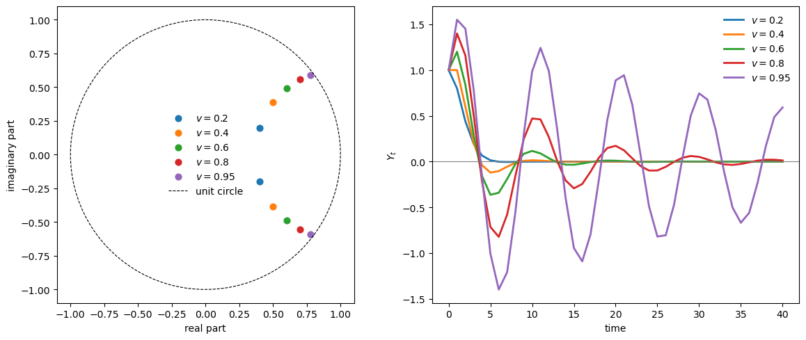
As \(v\) increases, eigenvalues approach the unit circle and oscillations become more persistent.
This illustrates that acceleration creates complex eigenvalues, which are necessary for oscillatory dynamics in deterministic systems.
But what happens when we add random shocks?
An insight of Ragnar Frisch [Frisch, 1933] was that damped oscillations can be “maintained” when the system is continuously perturbed by random disturbances.
To study this formally, we need to introduce the stochastic framework.
38.4. A linear system with shocks#
We analyze a first-order linear stochastic system
When the eigenvalues of \(A\) are strictly inside the unit circle, the process is covariance stationary and its autocovariances exist.
In the notation of Linear State Space Models, this is the same stability condition that guarantees a unique solution to a discrete Lyapunov equation.
Define the lag-\(k\) autocovariance matrices
Standard calculations (also derived in [Chow, 1968]) give the recursion
The second equation is the discrete Lyapunov equation for \(\Gamma_0\).
Chow [1968] motivates the stochastic analysis with a quote from Ragnar Frisch:
The examples we have discussed … show that when a [deterministic] economic system gives rise to oscillations, these will most frequently be damped. But in reality the cycles … are generally not damped. How can the maintenance of the swings be explained? … One way which I believe is particularly fruitful and promising is to study what would become of the solution of a determinate dynamic system if it were exposed to a stream of erratic shocks … Thus, by connecting the two ideas: (1) the continuous solution of a determinate dynamic system and (2) the discontinuous shocks intervening and supplying the energy that may maintain the swings—we get a theoretical setup which seems to furnish a rational interpretation of those movements which we have been accustomed to see in our statistical time data.
— Ragnar Frisch (1933) [Frisch, 1933]
Chow’s main insight is that oscillations in the deterministic system are neither necessary nor sufficient for producing “cycles” in the stochastic system.
We have to bring the stochastic element into the picture.
We will show that even when eigenvalues are real (no deterministic oscillations), the stochastic system can exhibit cyclical patterns in its autocovariances and spectral densities.
38.4.1. Autocovariances in terms of eigenvalues#
Let \(\lambda_1, \ldots, \lambda_p\) be the distinct, possibly complex, eigenvalues of \(A\), and let \(B\) be the matrix whose columns are the corresponding right eigenvectors:
where \(D_\lambda = \text{diag}(\lambda_1, \ldots, \lambda_p)\).
Define canonical variables \(z_t = B^{-1} y_t\).
These satisfy the decoupled dynamics:
where \(\varepsilon_t = B^{-1} u_t\) has covariance matrix \(W = B^{-1} V (B^{-1})^\top\).
The autocovariance matrix of the canonical variables, denoted \(\Gamma_k^*\), satisfies
and
where \(w_{ij}\) are elements of \(W\).
The autocovariance matrices of the original variables are then
The scalar autocovariance \(\gamma_{ij,k} = \mathbb{E}[y_{it} y_{j,t-k}]\) is a linear combination of powers of the eigenvalues:
Compare this to the deterministic time path from initial condition \(y_0\):
Both the autocovariance function (38.12) and the deterministic path (38.13) are linear combinations of \(\lambda_m^k\) (or \(\lambda_j^t\)).
38.4.2. Complex roots and damped oscillations#
When eigenvalues come in complex conjugate pairs \(\lambda = r e^{\pm i\theta}\) with \(r < 1\), their contribution to the autocovariance function is a damped cosine:
for appropriate amplitude \(s\) and phase \(\phi\) determined by the eigenvector loadings.
In the deterministic model, such complex roots generate damped oscillatory time paths.
In the stochastic model, they generate damped oscillatory autocovariance functions.
It is in this sense that deterministic oscillations could be “maintained” in the stochastic model, but as we will see, the connection between eigenvalues and spectral peaks is more subtle than this suggests.
38.5. From autocovariances to spectra#
Chow’s key step is to translate the autocovariance sequence \(\{\Gamma_k\}\) into a frequency-domain object.
The spectral density matrix is the Fourier transform of \(\Gamma_k\):
For the VAR(1) system (38.4), this sum has a closed form
\(F(\omega)\) tells us how much variation in \(y_t\) is associated with cycles of (angular) frequency \(\omega\).
Higher frequencies correspond to rapid oscillations, meaning short cycles where the series completes many up-and-down movements per unit of time.
Lower frequencies correspond to slower oscillations, meaning long cycles that unfold over extended periods.
The corresponding cycle length (or period) is
Thus, a frequency of \(\omega = \pi\) corresponds to the shortest possible cycle of \(T = 2\) periods, while frequencies near zero correspond to very long cycles.
When the spectral density \(F(\omega)\) is concentrated at particular frequencies, it indicates that the time series exhibits pronounced cyclical behavior at those frequencies.
The advanced lecture Estimation of Spectra explains how to estimate \(F(\omega)\) from data.
Here we focus on the model-implied spectrum.
We saw earlier that acceleration creates complex eigenvalues, which enable oscillatory impulse responses.
But do complex roots guarantee a spectral peak?
Are they necessary for one?
Chow provides precise answers for the Hansen-Samuelson model.
38.6. Spectral peaks in the Hansen-Samuelson model#
Chow [1968] provides a detailed spectral analysis of the Hansen-Samuelson multiplier-accelerator model, deriving exact conditions for when spectral peaks occur.
The analysis reveals that in this specific model, complex roots are necessary for a peak, but as we will see later, this is not true in general.
38.6.1. The model as a first-order system#
The second-order Hansen-Samuelson equation can be written as a first-order system:
where \(y_{2t} = y_{1,t-1}\) is simply the lagged value of \(y_{1t}\).
This structure implies a special relationship among the autocovariances:
Using the autocovariance recursion, Chow shows that this leads to the condition
which constrains the spectral density in a useful way.
38.6.2. The spectral density formula#
From equations (38.12) and the scalar kernel \(g_i(\omega) = (1 - \lambda_i^2)/(1 + \lambda_i^2 - 2\lambda_i \cos\omega)\), the spectral density of \(y_{1t}\) is:
which can be written in the combined form:
A key observation: due to condition (38.20), the numerator is not a function of \(\cos\omega\).
Therefore, to find a maximum of \(f_{11}(\omega)\), we need only find a minimum of the denominator.
38.6.3. Conditions for a spectral peak#
The first derivative of the denominator with respect to \(\omega\) is:
For \(0 < \omega < \pi\), we have \(\sin\omega > 0\), so the derivative equals zero if and only if:
For complex conjugate roots \(\lambda_1 = r e^{i\theta}\), \(\lambda_2 = r e^{-i\theta}\), substitution into (38.24) gives:
The second derivative confirms this is a maximum when \(\omega < \frac{3\pi}{4}\).
The necessary condition for a valid solution is:
We can interpret it as:
When \(r \approx 1\), the factor \((1+r^2)/2r \approx 1\), so \(\omega \approx \theta\)
When \(r\) is small (e.g., 0.3 or 0.4), condition (38.26) can only be satisfied if \(\cos\theta \approx 0\), meaning \(\theta \approx \pi/2\) (cycles of approximately 4 periods)
If \(\theta = 54^\circ\) (corresponding to cycles of 6.67 periods) and \(r = 0.4\), then \((1+r^2)/2r = 1.45\), giving \(\cos\omega = 1.45 \times 0.588 = 0.85\), or \(\omega = 31.5^\circ\), corresponding to cycles of 11.4 periods, which is much longer than the deterministic cycle.
def peak_condition_factor(r):
"""Compute (1 + r^2) / (2r)"""
return (1 + r**2) / (2 * r)
θ_deg = 54
θ = np.deg2rad(θ_deg)
r_grid = np.linspace(0.3, 0.99, 100)
# For each r, compute the implied peak frequency
ω_peak = []
for r in r_grid:
factor = peak_condition_factor(r)
cos_ω = factor * np.cos(θ)
if -1 < cos_ω < 1:
ω_peak.append(np.arccos(cos_ω))
else:
ω_peak.append(np.nan)
ω_peak = np.array(ω_peak)
period_peak = 2 * np.pi / ω_peak
fig, axes = plt.subplots(1, 2, figsize=(12, 4))
axes[0].plot(r_grid, np.rad2deg(ω_peak), lw=2)
axes[0].axhline(θ_deg, ls='--', lw=1.0, color='gray',
label=rf'$\theta = {θ_deg}°$')
axes[0].set_xlabel('eigenvalue modulus $r$')
axes[0].set_ylabel(r'peak frequency $\omega$ (degrees)')
axes[0].legend(frameon=False)
axes[1].plot(r_grid, period_peak, lw=2)
axes[1].axhline(360/θ_deg, ls='--', lw=1.0, color='gray',
label=rf'deterministic period = {360/θ_deg:.1f}')
axes[1].set_xlabel('eigenvalue modulus $r$')
axes[1].set_ylabel('peak period')
axes[1].legend(frameon=False)
plt.tight_layout()
plt.show()
r_example = 0.4
factor = peak_condition_factor(r_example)
cos_ω = factor * np.cos(θ)
ω_example = np.arccos(cos_ω)
print(f"Chow's example: r = {r_example}, θ = {θ_deg}°")
print(f" cos(ω) = {cos_ω:.3f}")
print(f" ω = {np.rad2deg(ω_example):.1f}°")
print(f" Peak period = {360/np.rad2deg(ω_example):.1f}")
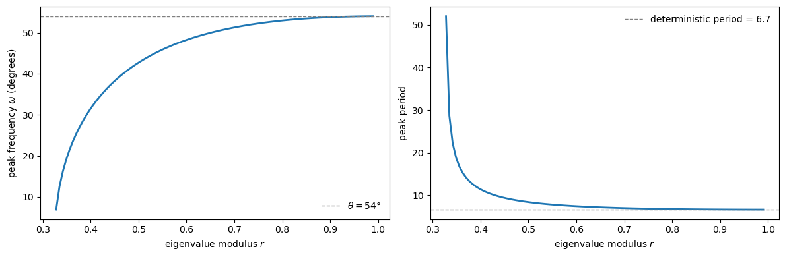
Chow's example: r = 0.4, θ = 54°
cos(ω) = 0.852
ω = 31.5°
Peak period = 11.4
As \(r \to 1\), the peak frequency converges to \(\theta\).
For smaller \(r\), the peak frequency can differ substantially from the deterministic oscillation frequency.
38.6.4. Real positive roots cannot produce peaks#
For real and positive roots \(\lambda_1, \lambda_2 > 0\), the first-order condition (38.24) cannot be satisfied.
To see why, recall that a spectral peak at an interior frequency \(\omega \in (0, \pi)\) requires
For this to have a solution, we need the right-hand side to lie in \([-1, 1]\).
But for positive \(\lambda_1, \lambda_2\), the numerator exceeds \(4\lambda_1\lambda_2\):
The right-hand side is a sum of two non-negative terms (each is a positive number times a square).
It equals zero only if both \(\lambda_1 = 1\) and \(\lambda_2 = 1\), which violates the stability condition \(|\lambda_i| < 1\).
For any stable system with real positive roots, this expression is strictly positive, so
which is impossible.
This is a key result: in the Hansen-Samuelson model, complex roots are necessary for a spectral peak at interior frequencies.
The following figure illustrates the difference in spectra between a case with complex roots and a case with real roots
ω_grid = np.linspace(1e-3, np.pi - 1e-3, 800)
V_hs = np.array([[1.0, 0.0], [0.0, 0.0]]) # shock only in first equation
# Case 1: Complex roots (c=0.6, v=0.8)
c_complex, v_complex = 0.6, 0.8
A_complex = samuelson_transition(c_complex, v_complex)
eig_complex = np.linalg.eigvals(A_complex)
# Case 2: Real roots (c=0.8, v=0.1)
c_real, v_real = 0.8, 0.1
A_real = samuelson_transition(c_real, v_real)
eig_real = np.linalg.eigvals(A_real)
print(
f"Complex case (c={c_complex}, v={v_complex}): eigenvalues = {eig_complex}")
print(
f"Real case (c={c_real}, v={v_real}): eigenvalues = {eig_real}")
F_complex = spectral_density_var1(A_complex, V_hs, ω_grid)
F_real = spectral_density_var1(A_real, V_hs, ω_grid)
f11_complex = np.real(F_complex[:, 0, 0])
f11_real = np.real(F_real[:, 0, 0])
fig, ax = plt.subplots()
ax.plot(ω_grid / np.pi, f11_complex / np.max(f11_complex), lw=2,
label=fr'complex roots ($c={c_complex}, v={v_complex}$)')
ax.plot(ω_grid / np.pi, f11_real / np.max(f11_real), lw=2,
label=fr'real roots ($c={c_real}, v={v_real}$)')
ax.set_xlabel(r'frequency $\omega/\pi$')
ax.set_ylabel('normalized spectrum')
ax.legend(frameon=False)
plt.show()
Complex case (c=0.6, v=0.8): eigenvalues = [0.7+0.55677644j 0.7-0.55677644j]
Real case (c=0.8, v=0.1): eigenvalues = [0.77015621 0.12984379]
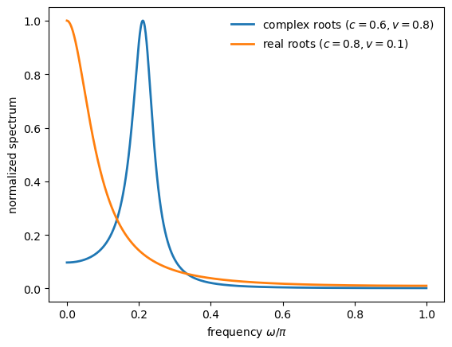
With complex roots, the spectrum has a clear interior peak.
With real roots, the spectrum is monotonically decreasing and no interior peak is possible.
38.7. Real roots can produce peaks in general models#
While real positive roots cannot produce spectral peaks in the Hansen-Samuelson model, Chow [1968] emphasizes that this is not true in general.
In multivariate systems, the spectral density of a linear combination of variables can have interior peaks even when all eigenvalues are real and positive.
38.7.1. Example#
Chow constructs the following explicit example with two real positive eigenvalues:
The spectral density of the linear combination \(x_t = b_m^\top y_t\) is:
Chow tabulates the values:
\(\omega\) |
\(0\) |
\(\pi/8\) |
\(2\pi/8\) |
\(3\pi/8\) |
\(4\pi/8\) |
\(5\pi/8\) |
\(6\pi/8\) |
\(7\pi/8\) |
\(\pi\) |
|---|---|---|---|---|---|---|---|---|---|
\(f_{mm}(\omega)\) |
1.067 |
1.183 |
1.191 |
1.138 |
1.061 |
0.981 |
0.912 |
0.860 |
0.829 |
The peak at \(\omega\) slightly below \(\pi/8\) (corresponding to periods around 11) is “quite pronounced.”
In the following figure, we reproduce this table, but with Python, we can plot a finer grid to find the peak more accurately
λ1, λ2 = 0.1, 0.9
w11, w22, w12 = 1.0, 1.0, 0.8
bm1, bm2 = 1.0, -0.01
# Construct the system
A_chow_ex = np.diag([λ1, λ2])
# W is the canonical shock covariance; we need V = B W B^T
# For diagonal A with distinct eigenvalues, B = I, so V = W
V_chow_ex = np.array([[w11, w12], [w12, w22]])
b_chow_ex = np.array([bm1, bm2])
# Chow's formula
def chow_spectrum_formula(ω):
term1 = 0.9913 / (1.01 - 0.2 * np.cos(ω))
term2 = 0.001570 / (1.81 - 1.8 * np.cos(ω))
return term1 - term2
# Compute via formula and via our general method
ω_table = np.array([0, np.pi/8, 2*np.pi/8, 3*np.pi/8, 4*np.pi/8,
5*np.pi/8, 6*np.pi/8, 7*np.pi/8, np.pi])
f_formula = np.array([chow_spectrum_formula(ω) for ω in ω_table])
# General method
ω_grid_fine = np.linspace(1e-4, np.pi, 1000)
F_chow_ex = spectral_density_var1(A_chow_ex, V_chow_ex, ω_grid_fine)
f_general = spectrum_of_linear_combination(F_chow_ex, b_chow_ex)
# Normalize to match Chow's table scale
scale = f_formula[0] / spectrum_of_linear_combination(
spectral_density_var1(
A_chow_ex, V_chow_ex, np.array([0.0])), b_chow_ex)[0]
print("Chow's Table (equation 67):")
print("ω/π: ", " ".join([f"{ω/np.pi:.3f}" for ω in ω_table]))
print("f_mm(ω): ", " ".join([f"{f:.3f}" for f in f_formula]))
fig, ax = plt.subplots(figsize=(9, 4))
ax.plot(ω_grid_fine / np.pi, f_general * scale, lw=2,
label='spectrum')
ax.scatter(ω_table / np.pi, f_formula, s=50, zorder=3,
label="Chow's table values")
# Mark the peak
i_peak = np.argmax(f_general)
ω_peak = ω_grid_fine[i_peak]
ax.axvline(ω_peak / np.pi, ls='--', lw=1.0, color='gray', alpha=0.7)
ax.set_xlabel(r'frequency $\omega/\pi$')
ax.set_ylabel(r'$f_{mm}(\omega)$')
ax.legend(frameon=False)
plt.show()
print(f"\nPeak at ω/π ≈ {ω_peak/np.pi:.3f}, period ≈ {2*np.pi/ω_peak:.1f}")
Chow's Table (equation 67):
ω/π: 0.000 0.125 0.250 0.375 0.500 0.625 0.750 0.875 1.000
f_mm(ω): 1.067 1.191 1.138 1.061 0.981 0.912 0.860 0.829 0.819
Peak at ω/π ≈ 0.100, period ≈ 20.0
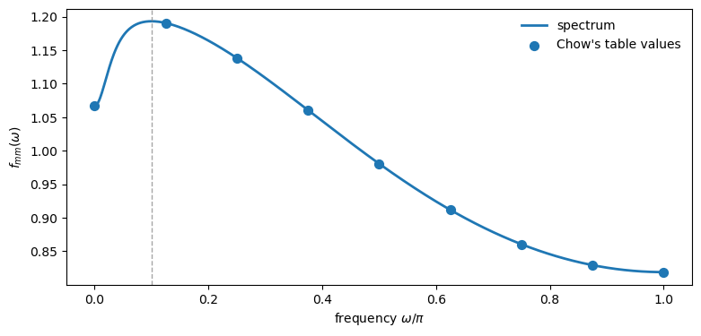
The peak appears at \(\omega/\pi \approx 0.10\), which corresponds to a cycle length of approximately 20 periods, again much longer than the deterministic cycles implied by the eigenvalues.
38.7.2. The Slutsky connection#
Chow connects this result to Slutsky’s [Slutsky, 1927] finding that moving averages of a random series have recurrent cycles.
The VAR(1) model can be written as an infinite moving average:
This amounts to taking an infinite moving average of the random vectors \(u_t\) with “geometrically declining” weights \(A^0, A^1, A^2, \ldots\)
For a scalar process with \(0 < \lambda < 1\), no distinct cycles can emerge.
But for a matrix \(A\) with real roots between 0 and 1, cycles can emerge in linear combinations of the variables.
As Chow puts it: “When neither of two (canonical) variables has distinct cycles… a linear combination can have a peak in its spectral density.”
38.7.3. The general lesson#
The examples above illustrate the following central points:
In the Hansen-Samuelson model specifically, complex roots are necessary for a spectral peak
But in general multivariate systems, complex roots are neither necessary nor sufficient
The full spectral shape depends on:
The eigenvalues of \(A\)
The shock covariance structure \(V\)
How the observable of interest loads on the eigenmodes (the vector \(b\))
38.8. A calibrated model in the frequency domain#
Chow and Levitan [1969] use the frequency-domain objects from Chow [1968] to study a calibrated annual macroeconometric model.
They work with five annual aggregates:
\(y_1 = C\) (consumption),
\(y_2 = I_1\) (equipment plus inventories),
\(y_3 = I_2\) (construction),
\(y_4 = R_a\) (long rate),
\(y_5 = Y_1 = C + I_1 + I_2\) (private-domestic GNP),
and add \(y_6 = y_{1,t-1}\) to rewrite the original system in first-order form.
Throughout this section, frequency is measured in cycles per year, \(f = \omega/2\pi \in [0, 1/2]\).
Following the paper, we normalize each spectrum to have area 1 over \([0, 1/2]\) so plots compare shape rather than scale.
Our goal is to reconstruct the transition matrix \(A\) and then compute and interpret the model-implied spectra, gains/coherences, and phase differences.
38.8.1. The cycle subsystem#
The paper starts from a reduced form with exogenous inputs,
To study cycles, they remove the deterministic component attributable to \(x_t\) and focus on the zero-mean subsystem
For second moments, the only additional ingredient is the covariance matrix \(V = \mathbb E[u_t u_t^\top]\).
Chow and Levitan compute it from structural parameters via
where \(\Sigma\) is the covariance of structural residuals and \(M\) is the matrix of contemporaneous structural coefficients.
Here we take \(A\) and \(V\) as given and ask what they imply for spectra and cross-spectra.
The \(6 \times 6\) reduced-form shock covariance matrix \(V\) (scaled by \(10^{-7}\)) reported by Chow and Levitan is:
The sixth row and column are zeros because \(y_6\) is an identity (lagged \(y_1\)).
The transition matrix \(A\) has six characteristic roots:
Two roots are near unity because two structural equations are in first differences.
One root (\(\lambda_6\)) is theoretically zero because of the identity \(y_5 = y_1 + y_2 + y_3\).
The complex conjugate pair \(\lambda_{4,5}\) has modulus \(|\lambda_4| = \sqrt{0.0761^2 + 0.1125^2} \approx 0.136\).
The right eigenvector matrix \(B\) (columns are eigenvectors corresponding to \(\lambda_1, \ldots, \lambda_6\)):
Together, \(V\), \(\{\lambda_i\}\), and \(B\) are sufficient to compute all spectral and cross-spectral densities.
38.8.2. Reconstructing \(A\) and computing \(F(\omega)\)#
The paper reports \((\lambda, B, V)\), which is enough to reconstruct \(A = B \, \mathrm{diag}(\lambda_1,\dots,\lambda_6)\, B^{-1}\) and then compute the model-implied spectral objects.
λ = np.array([
0.9999725, 0.9999064, 0.4838,
0.0761 + 0.1125j, 0.0761 - 0.1125j, -0.00004142
], dtype=complex)
B = np.array([
[-0.008, 1.143, 0.320, 0.283+0.581j, 0.283-0.581j, 0.000],
[-0.000, 0.013, -0.586, -2.151+0.742j, -2.151-0.742j, 2.241],
[-0.001, 0.078, 0.889, -0.215+0.135j, -0.215-0.135j, 0.270],
[1.024, 0.271, 0.069, -0.231+0.163j, -0.231-0.163j, 0.307],
[-0.009, 1.235, 0.623, -2.082+1.468j, -2.082-1.468j, 2.766],
[-0.008, 1.143, 0.662, 4.772+0.714j, 4.772-0.714j, -4.399]
], dtype=complex)
V = np.array([
[8.250, 7.290, 2.137, 2.277, 17.68, 0],
[7.290, 7.135, 1.992, 2.165, 16.42, 0],
[2.137, 1.992, 0.618, 0.451, 4.746, 0],
[2.277, 2.165, 0.451, 1.511, 4.895, 0],
[17.68, 16.42, 4.746, 4.895, 38.84, 0],
[0, 0, 0, 0, 0, 0]
]) * 1e-7
D_λ = np.diag(λ)
A_chow = B @ D_λ @ np.linalg.inv(B)
A_chow = np.real(A_chow)
print("eigenvalues of reconstructed A:")
print(np.linalg.eigvals(A_chow).round(6))
eigenvalues of reconstructed A:
[-4.10000e-05+0.j 7.61000e-02+0.1125j 7.61000e-02-0.1125j
4.83800e-01+0.j 9.99906e-01+0.j 9.99973e-01+0.j ]
38.8.3. Canonical coordinates#
Chow and Levitan’s canonical transformation uses \(z_t = B^{-1} y_t\), giving dynamics \(z_t = D_\lambda z_{t-1} + e_t\).
Accordingly, the canonical shock covariance is
B_inv = np.linalg.inv(B)
W = B_inv @ V @ B_inv.T
print("diagonal of W:")
print(np.diag(W).round(10))
diagonal of W:
[ 8.560e-08-0.00e+00j 3.638e-07-0.00e+00j 1.300e-08-0.00e+00j
-7.880e-08+6.26e-08j -7.880e-08-6.26e-08j -1.650e-08+0.00e+00j]
Chow and Levitan derive the following closed-form formula for the spectral density matrix:
where \(w_{ij}\) are elements of the canonical shock covariance \(W\).
def spectral_density_chow(λ, B, W, ω_grid):
"""Spectral density via Chow's eigendecomposition formula."""
p = len(λ)
F = np.zeros((len(ω_grid), p, p), dtype=complex)
for k, ω in enumerate(ω_grid):
F_star = np.zeros((p, p), dtype=complex)
for i in range(p):
for j in range(p):
denom = (1 - λ[i] * np.exp(-1j * ω)) \
* (1 - λ[j] * np.exp(1j * ω))
F_star[i, j] = W[i, j] / denom
F[k] = B @ F_star @ B.T
return F / (2 * np.pi)
freq = np.linspace(1e-4, 0.5, 5000) # cycles/year in [0, 1/2]
ω_grid = 2 * np.pi * freq # radians in [0, π]
F_chow = spectral_density_chow(λ, B, W, ω_grid)
Let’s plot the univariate spectra of consumption (\(y_1\)) and equipment plus inventories (\(y_2\))
variable_names = ['$C$', '$I_1$', '$I_2$', '$R_a$', '$Y_1$']
freq_ticks = [1/18, 1/9, 1/6, 1/4, 1/3, 1/2]
freq_labels = [r'$\frac{1}{18}$', r'$\frac{1}{9}$', r'$\frac{1}{6}$',
r'$\frac{1}{4}$', r'$\frac{1}{3}$', r'$\frac{1}{2}$']
def paper_frequency_axis(ax):
ax.set_xlim([0.0, 0.5])
ax.set_xticks(freq_ticks)
ax.set_xticklabels(freq_labels)
ax.set_xlabel(r'frequency $\omega/2\pi$')
# Normalized spectra (areas set to 1)
S = np.real(np.diagonal(F_chow, axis1=1, axis2=2))[:, :5]
df = np.diff(freq)
areas = np.sum(0.5 * (S[1:] + S[:-1]) * df[:, None], axis=0)
S_norm = S / areas
mask = freq >= 0.0
fig, axes = plt.subplots(1, 2, figsize=(10, 6))
# Figure I.1: consumption (log scale)
axes[0].plot(freq[mask], S_norm[mask, 0], lw=2)
axes[0].set_yscale('log')
paper_frequency_axis(axes[0])
axes[0].set_ylabel(r'normalized $f_{11}(\omega)$')
# Figure I.2: equipment + inventories (log scale)
axes[1].plot(freq[mask], S_norm[mask, 1], lw=2)
axes[1].set_yscale('log')
paper_frequency_axis(axes[1])
axes[1].set_ylabel(r'normalized $f_{22}(\omega)$')
plt.tight_layout()
plt.show()
i_peak = np.argmax(S_norm[mask, 1])
f_peak = freq[mask][i_peak]
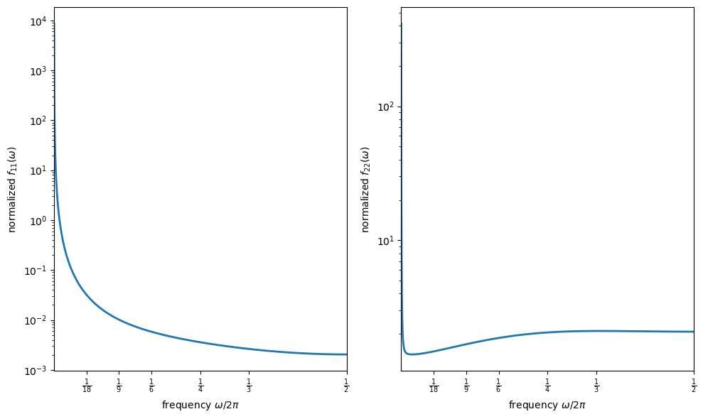
The left panel corresponds to consumption and declines monotonically with frequency.
It illustrates Granger’s “typical spectral shape” for macroeconomic time series.
The right panel corresponds to equipment plus inventories and shows the clearest (but still very flat) interior-frequency bump.
Chow and Levitan associate the dominance of very low frequencies in both plots with strong persistence and long-run movements.
Very large low-frequency power can arise from eigenvalues extremely close to one, which occurs mechanically when some equations are written in first differences.
Local peaks are not automatic: complex roots may have small modulus, and multivariate interactions can generate peaks even when all roots are real.
The interior bump in the right panel corresponds to cycles of roughly three years, with the spectrum nearly flat over cycles between about two and four years.
(This discussion follows Section II of [Chow and Levitan, 1969].)
38.8.4. How variables move together across frequencies#
Beyond univariate spectra, we can ask how pairs of variables covary at each frequency.
The cross-spectrum \(f_{ij}(\omega) = c_{ij}(\omega) - i \cdot q_{ij}(\omega)\) decomposes into the cospectrum \(c_{ij}\) and the quadrature spectrum \(q_{ij}\).
The cross-amplitude is \(g_{ij}(\omega) = |f_{ij}(\omega)| = \sqrt{c_{ij}^2 + q_{ij}^2}\).
The squared coherence measures linear association at frequency \(\omega\):
Coherence measures how much of the variance of \(y_i\) at frequency \(\omega\) can be “explained” by \(y_j\) at the same frequency.
High coherence means the two series move together tightly at that frequency.
The gain is the frequency-response coefficient when regressing \(y_i\) on \(y_j\):
It measures how much \(y_i\) responds to a unit change in \(y_j\) at frequency \(\omega\).
For instance, a gain of 0.9 at low frequencies means long-cycle movements in \(y_j\) translate almost one-for-one to \(y_i\), and a gain of 0.3 at high frequencies means short-cycle movements are dampened.
The phase captures lead-lag relationships (in radians):
def cross_spectral_measures(F, i, j):
"""Compute coherence, gain (y_i on y_j), and phase between variables i and j."""
f_ij = F[:, i, j]
f_ii, f_jj = np.real(F[:, i, i]), np.real(F[:, j, j])
g_ij = np.abs(f_ij)
coherence = (g_ij**2) / (f_ii * f_jj)
gain = g_ij / f_jj
phase = np.arctan2(-np.imag(f_ij), np.real(f_ij))
return coherence, gain, phase
We now plot gain and coherence as in Figures II.1–II.4 of [Chow and Levitan, 1969].
gnp_idx = 4
fig, axes = plt.subplots(1, 2, figsize=(8, 6))
for idx, var_idx in enumerate([0, 1]):
coherence, gain, phase = cross_spectral_measures(F_chow, var_idx, gnp_idx)
ax = axes[idx]
ax.plot(freq[mask], coherence[mask],
lw=2, label=rf'$R^2_{{{var_idx+1}5}}(\omega)$')
ax.plot(freq[mask], gain[mask],
lw=2, label=rf'$G_{{{var_idx+1}5}}(\omega)$')
paper_frequency_axis(ax)
ax.set_ylim([0, 1.0])
ax.set_ylabel('gain, coherence')
ax.legend(frameon=False, loc='best')
plt.tight_layout()
plt.show()
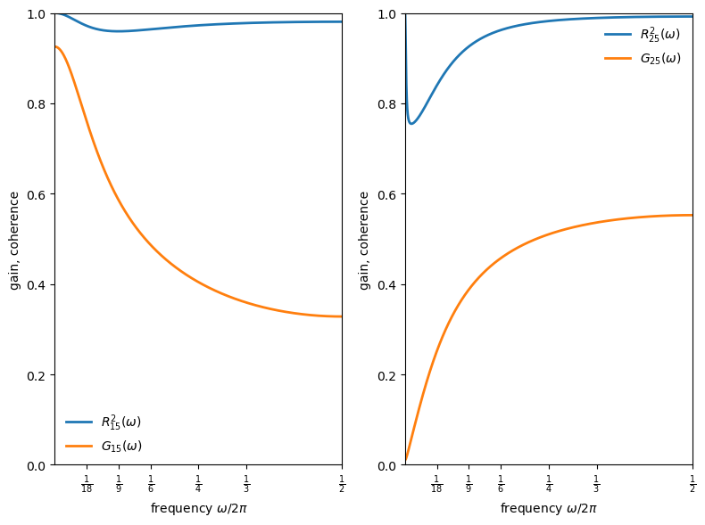
The gain and coherence patterns differ across components (Figures II.1–II.2 of [Chow and Levitan, 1969]):
Consumption vs private-domestic GNP (left panel):
Gain is about 0.9 at very low frequencies but falls below 0.4 for cycles shorter than four years.
This is evidence that short-cycle income movements translate less into consumption than long-cycle movements, consistent with permanent-income interpretations.
Coherence remains high throughout.
Equipment plus inventories vs private-domestic GNP (right panel):
Gain rises with frequency, exceeding 0.5 for short cycles.
This is the frequency-domain signature of acceleration and volatile short-run inventory movements.
fig, axes = plt.subplots(1, 2, figsize=(8, 6))
for idx, var_idx in enumerate([2, 3]):
coherence, gain, phase = cross_spectral_measures(F_chow, var_idx, gnp_idx)
ax = axes[idx]
ax.plot(freq[mask], coherence[mask],
lw=2, label=rf'$R^2_{{{var_idx+3}5}}(\omega)$')
ax.plot(freq[mask], gain[mask],
lw=2, label=rf'$G_{{{var_idx+3}5}}(\omega)$')
paper_frequency_axis(ax)
ax.set_ylim([0, 1.0])
ax.set_ylabel('gain, coherence')
ax.legend(frameon=False, loc='best')
plt.tight_layout()
plt.show()
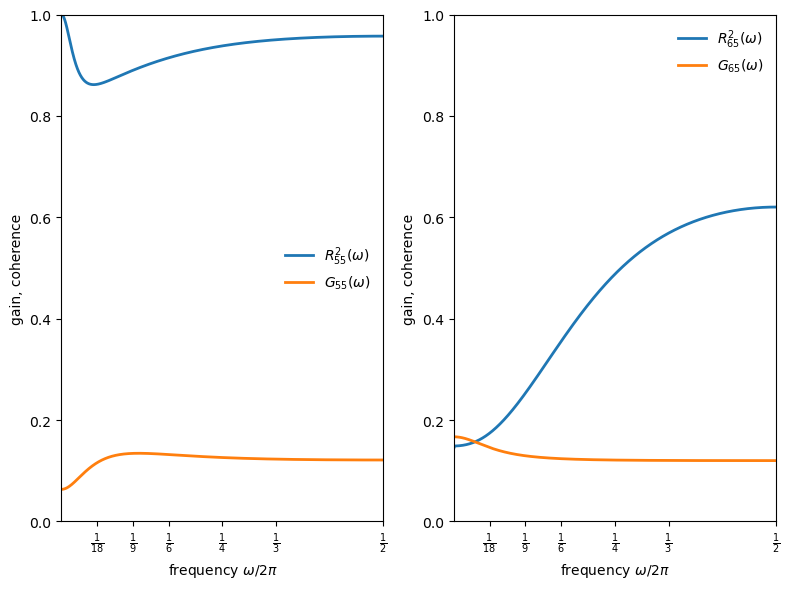
New construction vs private-domestic GNP (left panel):
Gain peaks at medium cycle lengths (around 0.1 for short cycles).
Coherence for both investment series stays fairly high across frequencies.
Long-bond yield vs private-domestic GNP (right panel):
Gain varies less across frequencies than real activity series.
Coherence with output is comparatively low at business-cycle frequencies, making it hard to explain interest-rate movements by inverting a money-demand equation.
38.8.5. Lead-lag relationships#
The phase tells us which variable leads at each frequency.
Positive phase means output leads the component; negative phase means the component leads output.
fig, ax = plt.subplots()
labels = [r'$\psi_{15}(\omega)/2\pi$', r'$\psi_{25}(\omega)/2\pi$',
r'$\psi_{35}(\omega)/2\pi$', r'$\psi_{45}(\omega)/2\pi$']
for var_idx in range(4):
coherence, gain, phase = cross_spectral_measures(F_chow, var_idx, gnp_idx)
phase_cycles = phase / (2 * np.pi)
ax.plot(freq[mask], phase_cycles[mask], lw=2, label=labels[var_idx])
ax.axhline(0, lw=0.8)
paper_frequency_axis(ax)
ax.set_ylabel('phase difference in cycles')
ax.set_ylim([-0.25, 0.25])
ax.set_yticks(np.arange(-0.25, 0.3, 0.05), minor=True)
ax.legend(frameon=False)
plt.tight_layout()
plt.show()
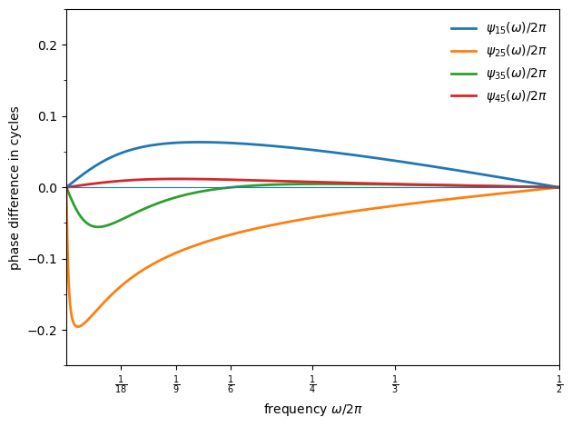
The phase relationships reveal that:
Output leads consumption by a small fraction of a cycle (about 0.06 cycles at a 6-year period, 0.04 cycles at a 3-year period).
Equipment plus inventories tends to lead output (by about 0.07 cycles at a 6-year period, 0.03 cycles at a 3-year period).
New construction leads at low frequencies and is close to coincident at higher frequencies.
The bond yield lags output slightly, remaining close to coincident in timing.
These implied leads and lags are broadly consistent with turning-point timing summaries reported elsewhere, and simulations of the same model deliver similar lead–lag ordering at turning points (Figure III of [Chow and Levitan, 1969]).
38.8.6. Building blocks of spectral shape#
Each eigenvalue contributes a characteristic spectral shape through the scalar kernel
For real \(\lambda_i\), this simplifies to
Each observable spectral density is a linear combination of these kernels (plus cross-terms).
Below, we plot the scalar kernels for each eigenvalue to see how they shape the overall spectra
def scalar_kernel(λ_i, ω_grid):
"""scalar spectral kernel g_i(ω)."""
λ_i = complex(λ_i)
mod_sq = np.abs(λ_i)**2
return np.array(
[(1 - mod_sq) / np.abs(1 - λ_i * np.exp(-1j * ω))**2
for ω in ω_grid])
fig, ax = plt.subplots(figsize=(10, 5))
for i, λ_i in enumerate(λ):
if np.abs(λ_i) > 0.01:
g_i = scalar_kernel(λ_i, ω_grid)
label = f'$\\lambda_{i+1}$ = {λ_i:.4f}' \
if np.isreal(λ_i) else f'$\\lambda_{i+1}$ = {λ_i:.3f}'
ax.semilogy(freq, g_i, label=label, lw=2)
ax.set_xlabel(r'frequency $\omega/2\pi$')
ax.set_ylabel('$g_i(\\omega)$')
ax.set_xlim([1/18, 0.5])
ax.set_xticks(freq_ticks)
ax.set_xticklabels(freq_labels)
ax.legend(frameon=False)
plt.show()
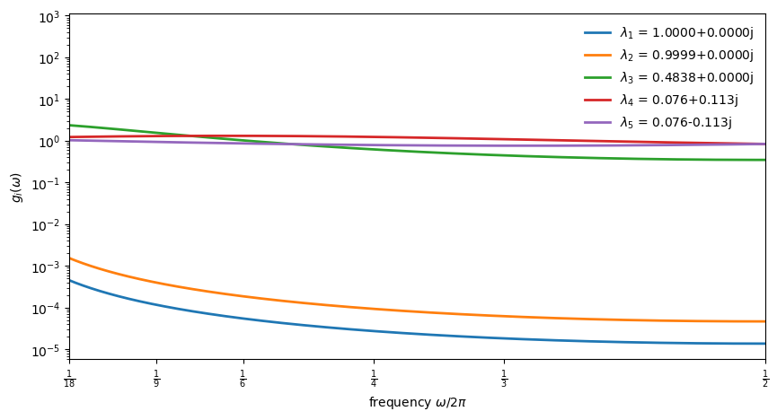
The figure reveals how eigenvalue magnitude shapes spectral contributions:
Near-unit eigenvalues (\(\lambda_1, \lambda_2 \approx 1\)) produce kernels sharply peaked at low frequencies as these drive the strong low-frequency power seen in the spectra above.
The moderate eigenvalue (\(\lambda_3 \approx 0.48\)) contributes a flatter component that spreads power more evenly across frequencies.
The complex pair (\(\lambda_{4,5}\)) has such small modulus (\(|\lambda_{4,5}| \approx 0.136\)) that its kernel is nearly flat, which is too weak to generate a pronounced interior peak.
This decomposition explains why the spectra look the way they do: the near-unit eigenvalues dominate, concentrating variance at very low frequencies.
The complex pair, despite enabling oscillatory dynamics in principle, has insufficient modulus to produce a visible spectral peak.
38.9. Summary#
Chow [1968] draws several conclusions that remain relevant for understanding business cycles.
The acceleration principle receives strong empirical support: the negative coefficient on lagged output in investment equations is a robust finding across datasets.
The relationship between eigenvalues and spectral peaks is more subtle than it first appears:
Complex roots guarantee oscillatory autocovariances, but they are neither necessary nor sufficient for a pronounced spectral peak.
In the Hansen–Samuelson model specifically, complex roots are necessary for a peak.
But in general multivariate systems, even real roots can produce peaks through the interaction of shocks and eigenvector loadings.
Chow and Levitan [1969] demonstrate what these objects look like in a calibrated system: strong low-frequency power from near-unit eigenvalues, frequency-dependent gains and coherences, and lead–lag relations that vary with cycle length.
Their results are consistent with Granger’s “typical spectral shape” for economic time series.
That is a monotonically decreasing function of frequency, driven by the near-unit eigenvalues that arise when some equations are specified in first differences.
Understanding whether this shape reflects the true data-generating process requires analyzing the spectral densities implied by structural econometric models.
38.10. Exercises#
Exercise 38.1
Plot impulse responses and spectra side-by-side for several values of the accelerator \(v\) in the Hansen-Samuelson model, showing how acceleration strength affects both the time-domain and frequency-domain signatures.
Use the same \(v\) values as in the main text: \(v \in \{0.2, 0.4, 0.6, 0.8, 0.95\}\) with \(c = 0.6\).
Solution
Here is one solution:
v_grid_ex1 = [0.2, 0.4, 0.6, 0.8, 0.95]
c_ex1 = 0.6
freq_ex1 = np.linspace(1e-4, 0.5, 2000)
ω_grid_ex1 = 2 * np.pi * freq_ex1
V_ex1 = np.array([[1.0, 0.0], [0.0, 0.0]])
T_irf_ex1 = 40
fig, axes = plt.subplots(1, 2, figsize=(12, 5))
for v in v_grid_ex1:
A = samuelson_transition(c_ex1, v)
# impulse response (left panel)
s = np.array([1.0, 0.0])
irf = np.empty(T_irf_ex1 + 1)
for t in range(T_irf_ex1 + 1):
irf[t] = s[0]
s = A @ s
axes[0].plot(range(T_irf_ex1 + 1), irf, lw=2, label=f'$v={v}$')
# spectrum (right panel)
F = spectral_density_var1(A, V_ex1, ω_grid_ex1)
f11 = np.real(F[:, 0, 0])
df = np.diff(freq_ex1)
area = np.sum(0.5 * (f11[1:] + f11[:-1]) * df)
f11_norm = f11 / area
axes[1].plot(freq_ex1, f11_norm, lw=2, label=f'$v={v}$')
axes[0].axhline(0, lw=0.8, color='gray')
axes[0].set_xlabel('time')
axes[0].set_ylabel(r'$Y_t$')
axes[0].legend(frameon=False)
axes[1].set_xlabel(r'frequency $\omega/2\pi$')
axes[1].set_ylabel('normalized spectrum')
axes[1].set_xlim([0, 0.5])
axes[1].set_yscale('log')
axes[1].legend(frameon=False)
plt.tight_layout()
plt.show()
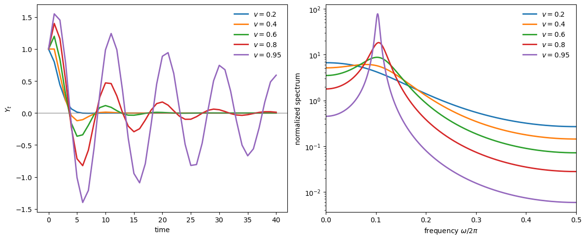
As \(v\) increases, eigenvalues approach the unit circle: oscillations become more persistent in the time domain (left), and the spectral peak becomes sharper in the frequency domain (right).
Complex roots produce a pronounced peak at interior frequencies—the spectral signature of business cycles.
Exercise 38.2
Verify spectral peak condition (38.25) numerically for the Hansen-Samuelson model.
For a range of eigenvalue moduli \(r \in [0.3, 0.99]\) with fixed \(\theta = 60°\), compute:
The theoretical peak frequency from formula: \(\cos\omega = \frac{1+r^2}{2r}\cos\theta\)
The actual peak frequency by numerically maximizing the spectral density
Plot both on the same graph and verify they match.
Identify the range of \(r\) for which no valid peak exists (when the condition (38.26) is violated).
Solution
Here is one solution:
θ_ex = np.pi / 3 # 60 degrees
r_grid = np.linspace(0.3, 0.99, 50)
ω_grid_ex = np.linspace(1e-3, np.pi - 1e-3, 1000)
V_hs_ex = np.array([[1.0, 0.0], [0.0, 0.0]])
ω_theory = []
ω_numerical = []
for r in r_grid:
# Theoretical peak
factor = (1 + r**2) / (2 * r)
cos_ω = factor * np.cos(θ_ex)
if -1 < cos_ω < 1:
ω_theory.append(np.arccos(cos_ω))
else:
ω_theory.append(np.nan)
# Numerical peak from spectral density
# Construct Hansen-Samuelson with eigenvalues r*exp(+-iθ)
# This corresponds to c + v = 2r*cos(θ), v = r^2
v = r**2
c = 2 * r * np.cos(θ_ex) - v
A_ex = samuelson_transition(c, v)
F_ex = spectral_density_var1(A_ex, V_hs_ex, ω_grid_ex)
f11 = np.real(F_ex[:, 0, 0])
i_max = np.argmax(f11)
# Only count as a peak if it's not at the boundary
if 5 < i_max < len(ω_grid_ex) - 5:
ω_numerical.append(ω_grid_ex[i_max])
else:
ω_numerical.append(np.nan)
ω_theory = np.array(ω_theory)
ω_numerical = np.array(ω_numerical)
fig, axes = plt.subplots(1, 2, figsize=(12, 4))
# Plot peak frequencies
axes[0].plot(r_grid, ω_theory / np.pi, lw=2, label="Chow's formula")
axes[0].plot(r_grid, ω_numerical / np.pi, 'o', markersize=4, label='numerical')
axes[0].axhline(θ_ex / np.pi, ls='--', lw=1.0, color='gray', label=r'$\theta/\pi$')
axes[0].set_xlabel('eigenvalue modulus $r$')
axes[0].set_ylabel(r'peak frequency $\omega^*/\pi$')
axes[0].legend(frameon=False)
# Plot the factor (1+r^2)/2r to show when peaks are valid
axes[1].plot(r_grid, (1 + r_grid**2) / (2 * r_grid), lw=2)
axes[1].axhline(1 / np.cos(θ_ex), ls='--', lw=1.0, color='red',
label=f'threshold = 1/cos({np.rad2deg(θ_ex):.0f}°) = {1/np.cos(θ_ex):.2f}')
axes[1].set_xlabel('eigenvalue modulus $r$')
axes[1].set_ylabel(r'$(1+r^2)/2r$')
axes[1].legend(frameon=False)
plt.tight_layout()
plt.show()
# Find threshold r below which no peak exists
valid_mask = ~np.isnan(ω_theory)
if valid_mask.any():
r_threshold = r_grid[valid_mask][0]
print(f"Peak exists for r >= {r_threshold:.2f}")
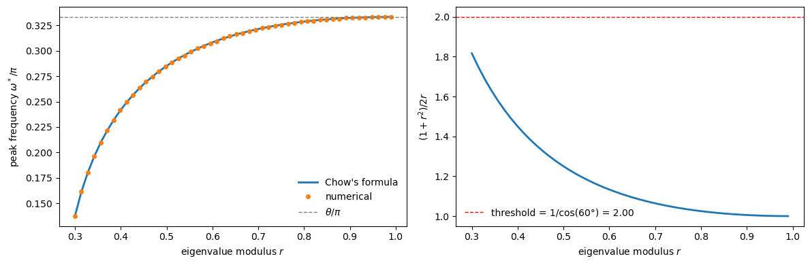
Peak exists for r >= 0.30
The theoretical and numerical peak frequencies match closely.
As \(r \to 1\), the peak frequency converges to \(\theta\).
For smaller \(r\), the factor \((1+r^2)/2r\) exceeds the threshold, and no valid peak exists.
Exercise 38.3
In the “real roots but a peak” example, hold \(A\) fixed and vary the shock correlation (the off-diagonal entry of \(V\)) between \(0\) and \(0.99\).
When does the interior-frequency peak appear, and how does its location change?
Solution
Here is one solution:
A_ex3 = np.diag([0.1, 0.9])
b_ex3 = np.array([1.0, -0.01])
corr_grid = np.linspace(0, 0.99, 50)
peak_periods = []
for corr in corr_grid:
V_ex3 = np.array([[1.0, corr], [corr, 1.0]])
F_ex3 = spectral_density_var1(A_ex3, V_ex3, ω_grid_ex)
f_x = spectrum_of_linear_combination(F_ex3, b_ex3)
i_max = np.argmax(f_x)
if 5 < i_max < len(ω_grid_ex) - 5:
peak_periods.append(2 * np.pi / ω_grid_ex[i_max])
else:
peak_periods.append(np.nan)
fig, ax = plt.subplots(figsize=(8, 4))
ax.plot(corr_grid, peak_periods, marker='o', lw=2, markersize=4)
ax.set_xlabel('shock correlation')
ax.set_ylabel('peak period')
plt.show()
threshold_idx = np.where(~np.isnan(peak_periods))[0]
if len(threshold_idx) > 0:
print(
f"interior peak when correlation >= {corr_grid[threshold_idx[0]]:.2f}")
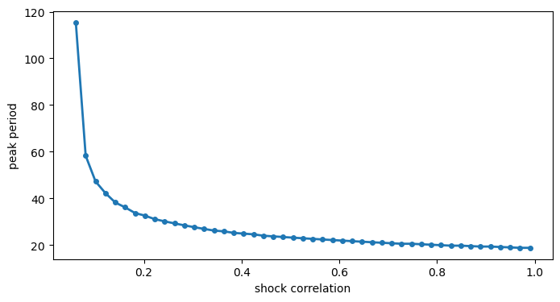
interior peak when correlation >= 0.06
The interior peak appears only when the shock correlation exceeds a threshold.
This illustrates that spectral peaks depend on the full system structure, not just eigenvalues.
Exercise 38.4
Using the calibrated Chow-Levitan parameters, compute the autocovariance matrices \(\Gamma_0, \Gamma_1, \ldots, \Gamma_{10}\) using:
The recursion \(\Gamma_k = A \Gamma_{k-1}\) with \(\Gamma_0\) from the Lyapunov equation.
Chow’s eigendecomposition formula \(\Gamma_k = B D_\lambda^k \Gamma_0^* B^\top\) where \(\Gamma_0^*\) is the canonical covariance.
Verify that both methods give the same result.
Solution
Here is one solution:
from scipy.linalg import solve_discrete_lyapunov
Γ_0_lyap = solve_discrete_lyapunov(A_chow, V)
Γ_recursion = [Γ_0_lyap]
for k in range(1, 11):
Γ_recursion.append(A_chow @ Γ_recursion[-1])
p = len(λ)
Γ_0_star = np.zeros((p, p), dtype=complex)
for i in range(p):
for j in range(p):
Γ_0_star[i, j] = W[i, j] / (1 - λ[i] * λ[j])
Γ_eigen = []
for k in range(11):
D_k = np.diag(λ**k)
Γ_eigen.append(np.real(B @ D_k @ Γ_0_star @ B.T))
print("Comparison of Γ_5 (first 3x3 block):")
print("\nRecursion method:")
print(np.real(Γ_recursion[5][:3, :3]).round(10))
print("\nEigendecomposition method:")
print(Γ_eigen[5][:3, :3].round(10))
print("\nMax absolute difference:",
np.max(np.abs(np.real(Γ_recursion[5]) - Γ_eigen[5])))
Comparison of Γ_5 (first 3x3 block):
Recursion method:
[[2.5417901e-03 2.9310700e-05 1.7370210e-04]
[2.8886900e-05 3.3220000e-07 1.9737000e-06]
[1.7356020e-04 2.0028000e-06 1.1861700e-05]]
Eigendecomposition method:
[[2.5417901e-03 2.9310700e-05 1.7370210e-04]
[2.8886900e-05 3.3220000e-07 1.9737000e-06]
[1.7356020e-04 2.0028000e-06 1.1861700e-05]]
Max absolute difference: 9.500386588534582e-14
Both methods produce essentially identical results, up to numerical precision.
Exercise 38.5
Modify the Chow-Levitan model by changing \(\lambda_3\) from \(0.4838\) to \(0.95\).
Recompute the spectral densities.
How does this change affect the spectral shape for each variable?
What economic interpretation might correspond to this parameter change?
Solution
Here is one solution:
# Modify λ_3 and reconstruct the transition matrix
λ_modified = λ.copy()
λ_modified[2] = 0.95
D_λ_mod = np.diag(λ_modified)
A_mod = np.real(B @ D_λ_mod @ np.linalg.inv(B))
# Compute spectra using the VAR(1) formula with original V
F_mod = spectral_density_var1(A_mod, V, ω_grid)
F_orig = spectral_density_var1(A_chow, V, ω_grid)
# Plot ratio of spectra for output (Y_1)
f_orig = np.real(F_orig[:, 4, 4])
f_mod = np.real(F_mod[:, 4, 4])
fig, ax = plt.subplots()
ax.plot(freq, f_mod / f_orig, lw=2)
ax.axhline(1.0, ls='--', lw=1, color='gray')
paper_frequency_axis(ax)
ax.set_ylabel(r"ratio: modified / original spectrum for $Y_1$")
plt.show()
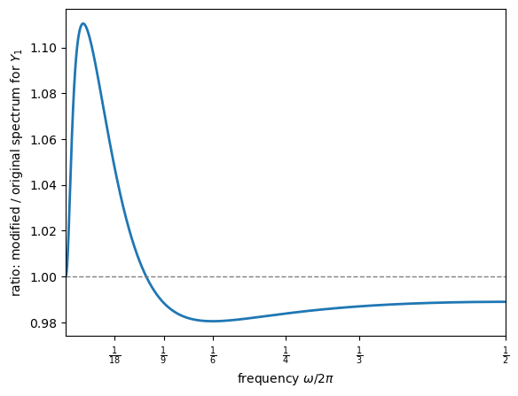
The near-unit eigenvalues (\(\lambda_1, \lambda_2 \approx 0.9999\)) dominate the output spectrum so heavily that changing \(\lambda_3\) from 0.48 to 0.95 produces only a small relative effect.
The ratio plot reveals the change: the modified spectrum has slightly more power at low-to-medium frequencies and slightly less at high frequencies.
Economically, increasing \(\lambda_3\) adds persistence to the mode it governs.